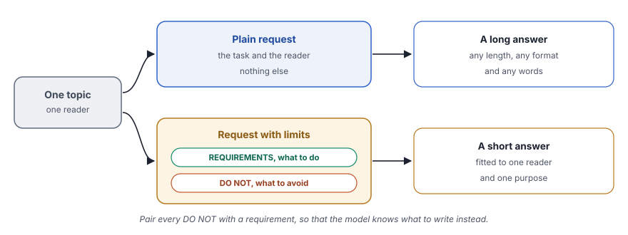

Negative prompting tells the model what to avoid, so that the answer stays within clear limits.
What you will learn
- What a negative prompt is, and why it works best next to clear requirements
- How to compare the same request with and without limits
- How to check each limit in an answer, one by one
- Why a number, such as a word limit, is harder for a model than a ban
- What limits cost, and why a hard limit belongs in code
Read chapter 5 first. This chapter starts from a zero-shot prompt of the same kind and adds limits to it.
The idea
In chapter 16, the model improved its answer after it wrote it. This chapter shapes the answer before the model writes it. A plain request leaves the model free to choose the length, the format and the words. A model often uses that freedom to write a long, complete answer with headings and lists. Such an answer suits an expert, but not a busy founder who wants the main point in a minute.
Negative prompting adds limits to the request. One part lists what the answer must do, such as a word limit or the kind of examples. The other part lists what the answer must not do, such as jargon, bullet points or exact amounts. Together, the two lists fit the answer to one reader.
The "do not" part needs some care, because a model reads every word of the prompt, including the words that you ban. A study by Joel Jang and colleagues, "Can Large Language Models Truly Understand Prompts?", found that models often handle negated instructions worse than positive ones. The "pink elephant" study by Louis Castricato and colleagues looked at the same problem from the other side. It trained models to steer away from a banned topic and toward a preferred one. Both studies are clear, practical and worth reading for anyone who writes prompts.
Both point to the same habit. Pair every "do not" with a "do", so that the model knows what to write instead. The Prompt Engineering Guide gives the same advice. Both programs of this chapter follow it.
A family in Jaipur books a caterer for a wedding of 200 guests. They give clear rules. The budget is ₹1 lakh and the food must be mild. No dish can have onion or garlic. These rules alone do not make a menu, so the family also says what they want, such as dal baati churma and two sweets. A good brief says both what to avoid and what to make, and a good prompt does the same.
The idea in one picture
The same topic goes into two prompts. Only the second prompt sets limits.

| Plain request | Request with limits | |
|---|---|---|
| What the prompt says | The task and the reader | The task, the reader, the requirements and a DO NOT list |
| Length of the answer | Free, often long | Set by a limit |
| Format and words | Chosen by the model | Set by the prompt |
| Best for | A first, full overview | An answer for one reader and one purpose |
| Calls to the model | One | One |
What we build in this chapter
Each program sends the same request twice, first as a plain request and then with limits. It prints both answers with their word counts, so that you can compare them side by side. Only the model, the topic and the limits change between the two programs.
The DPDP Act with Gemini
- Aim
- Gemini explains consent under India's DPDP Act to a startup founder, once without limits and once with them.
- Problem
- The founder needs a short, plain answer that says what to do and what is at risk, without legal terms.
- Input
- One topic in plain text, used in both prompts.
- Expected output
- Two answers with their word counts, for example
[Word count: 97] - Model
- Gemini 3.1 Flash Lite
Certificate pinning with Llama
- Aim
- Llama explains certificate pinning to a product manager, once without limits and once with them.
- Problem
- The product manager needs to know what pinning protects and why it matters to users, without technical terms.
- Input
- One topic in plain text, used in both prompts.
- Expected output
- The same two parts as Example 1.
- Model
- Llama 3.1 8B, through OpenRouter
DPDP stands for the Digital Personal Data Protection Act of India, from 2023. Certificate pinning makes an app trust only the server certificates that it already knows, so that a fake server cannot pass as the real one.
![Setup, llm = ChatGoogleGenerativeAI(model="gemini-3.1-flash-lite", ...), temperature=0.3, so that the wording varies a little. Input, topic = "...", The DPDP Act and consent for mobile apps, for a startup founder. Plain, unconstrained_prompt, Explain {topic} to .... Call, (unconstrained_prompt | llm | parser).invoke(...), The answer without limits. Count, len(result.split()), Prints the answer and its word count. Limits, constrained_prompt, The same request, plus REQUIREMENTS and DO NOT. Call, (constrained_prompt | llm | parser).invoke(...), The answer with limits. Count, len(result.split()), Prints the answer and its word count, to compare with the limit of 100 words.](../../assets/img/diagrams/ai-17-ex1-flow.svg)
Step 1Create the file
In your project folder, create the file src/16_negative_prompting_google.py. The docstring states the idea in two sentences. It also says how the program shows the effect, namely the same request with and without limits.
"""
Title: Negative Prompting (Google Generative AI)
Negative prompting tells the model what NOT to do as well as what to do,
by adding clear limits such as a word limit and a list of things to avoid.
The same request is run with and without these limits so you can compare.
uv run python src/16_negative_prompting_google.py
"""Step 2Import what you need
from dotenv import load_dotenv
from langchain_google_genai import ChatGoogleGenerativeAI
from langchain_core.prompts import ChatPromptTemplate
from langchain_core.output_parsers import StrOutputParserload_dotenvreads your API key from the.envfile, as in every chapter.ChatGoogleGenerativeAI,ChatPromptTemplateandStrOutputParserare the model, the prompt and the parser of chapter 2.
Step 3Create the model and the parser
def main():
load_dotenv()
# Initialize the model
llm = ChatGoogleGenerativeAI(
model="gemini-3.1-flash-lite",
temperature=0.3,
) # Parser to extract the text from the model response
parser = StrOutputParser()temperature=0.3is new. In chapters 15 and 16, you used 0, so that each step gave a steady result. Here, a little variety gives more natural wording. Your answers will therefore differ a little from the output below.StrOutputParserturns each reply into plain text, so that you can print it and count its words.
Step 4Set the topic
topic = "India's DPDP Act, 2023 and consent for mobile apps"- The topic sits in one variable, so that both prompts get exactly the same text. Only the limits differ, so any change in the answer comes from the limits.
Step 5Write the plain request
# Without constraints
unconstrained_prompt = ChatPromptTemplate.from_template(
"Explain {topic} to a startup founder."
)- "Explain {topic} to a startup founder" names the task and the reader, but sets no limits. The model chooses the length, the format and the words.
Step 6Write the request with limits
# With negative constraints
constrained_prompt = ChatPromptTemplate.from_template("""
Explain {topic} to a startup founder.
REQUIREMENTS:
- Maximum 100 words
- Use everyday business analogies, not legal ones
- Focus on what the founder must do and the cost of getting it wrong
DO NOT:
- Use legal jargon (no "data fiduciary", "data principal", "Schedule", "Section")
- Include code or technical terms
- Use bullet points
- Quote exact penalty amounts
Write in a conversational, professional tone.
""")- The first line is the same request, so the task does not change.
- REQUIREMENTS lists what the answer must do. "Maximum 100 words" sets the length. "Use everyday business analogies, not legal ones" tells the model how to explain, and the last requirement picks the content.
- DO NOT lists what the answer must avoid. The banned terms are words that a founder does not need, such as "data fiduciary" and "Section".
- "Quote exact penalty amounts" is banned too. An amount from memory can be wrong, and a founder can act on a wrong number.
- Each "do not" has a matching "do". "No legal jargon" pairs with everyday analogies, and "no bullet points" pairs with the conversational tone of the last line.
Step 7Run both prompts and count the words
print("\n--- WITHOUT CONSTRAINTS ---")
result = (unconstrained_prompt | llm | parser).invoke({"topic": topic})
print(result)
word_count = len(result.split())
print(f"\n[Word count: {word_count}]")
print("\n" + "=" * 60)
print("\n--- WITH CONSTRAINTS ---")
result = (constrained_prompt | llm | parser).invoke({"topic": topic})
print(result)
word_count = len(result.split())
print(f"\n[Word count: {word_count}]")(unconstrained_prompt | llm | parser)builds the chain inside the brackets. It is the same three-part chain of chapter 2, written in one line..invoke({"topic": topic})fills the{topic}placeholder and sends the prompt.len(result.split())splits the answer at spaces and counts the pieces. It is a rough word count, but good enough to check a limit.- Both runs print the answer and its word count, so that you can compare them.
if __name__ == "__main__":
main()uv run python src/16_negative_prompting_google.pyShow the full output61 lines
============================================================
NEGATIVE PROMPTING: WITH AND WITHOUT CONSTRAINTS
============================================================
--- WITHOUT CONSTRAINTS ---
Direct use of automatic function calling (AFC) in Models.generate_content is not recommended. Instead, we recommend to use AFC in Chat.send_message. Similarly, direct use of AFC in Models.generate_content_stream is not recommended. Instead, we recommend to use AFC in Chat.send_message_stream.
For a startup founder, the **Digital Personal Data Protection (DPDP) Act, 2023** is not just a legal hurdle—it is a fundamental shift in how you must design your product.
Think of it as the "GDPR of India." If you handle user data, you are now a **Data Fiduciary**, and your users are **Data Principals**.
Here is the breakdown of what you need to know, specifically regarding **Consent** for your mobile app.
---
### 1. The Core Philosophy: "Privacy by Design"
The Act mandates that you can only process data for a **specific, lawful purpose** that the user has clearly consented to. You can no longer collect "everything just in case we need it later."
### 2. The "Consent" Requirements (The Rules of the Game)
Under the DPDP Act, consent must be **free, specific, informed, unconditional, and unambiguous.**
* **The "Notice" Requirement:** Before or at the time of asking for consent, you must provide a **Notice** (in plain language, and ideally in English + the 22 languages of the 8th Schedule of the Constitution). This notice must state:
* What data you are collecting.
* Why you are collecting it (the purpose).
* How they can withdraw consent.
* How they can file a grievance with your Data Protection Officer (DPO).
* **Actionable Consent:** You cannot use "pre-ticked boxes" or "silence" as consent. The user must perform a clear, affirmative action (e.g., clicking "I Agree" after reading the notice).
* **Withdrawal:** It must be **as easy to withdraw consent as it was to give it.** If a user clicks "Withdraw," you must stop processing their data and delete it (unless another law requires you to keep it).
### 3. What this means for your Mobile App UX
Stop using "Dark Patterns." The Act explicitly discourages deceptive design.
* **Granular Consent:** Don’t bundle permissions. If your app needs Location for a delivery feature but also wants to track Contacts for "marketing," you must ask for these separately. Do not force the user to accept both to use the app.
* **The "Consent Manager":** The Act introduces a "Consent Manager"—a platform or entity registered with the Data Protection Board that acts as a single point for users to manage their consents across different apps. You will eventually need to integrate with these systems.
* **Data Minimization:** Only collect what is strictly necessary for the service. If you are a food delivery app, you don't need access to the user's photo gallery. If you ask for it, you will have to justify it legally.
### 4. Critical "Startup" Checklist
1. **Appoint a DPO:** If you are a significant data fiduciary (or handle large volumes of data), you must appoint a Data Protection Officer based in India.
2. **Update your Privacy Policy:** Your current "Terms & Conditions" are likely insufficient. Rewrite them to be transparent, simple, and specific to the DPDP Act.
3. **Data Audit:** Map your data flow. Where is it stored? Who has access? How long do you keep it? If you don't know where your data is, you cannot comply.
4. **Children’s Data:** **Huge Red Flag.** You cannot track, target, or process the data of anyone under 18 in a way that causes "detrimental effect." You must obtain verifiable parental consent. If your app is for kids, the compliance bar is significantly higher.
5. **Grievance Redressal:** You must have a clear mechanism for users to complain. If a user asks to delete their data, you must have a technical process to wipe it from your servers and your third-party vendors (e.g., AWS, Firebase, Mixpanel).
### 5. The Risk: Why you should care
The penalties under the DPDP Act are massive—up to **₹250 Crore** for failing to prevent a data breach. Beyond the fines, the reputational damage and the potential for the Data Protection Board to order you to stop processing data (effectively shutting down your app) are existential threats to a startup.
### Founder’s Advice:
* **Don't treat this as a "legal" task; treat it as a "product" task.** Build the consent flow into your onboarding UX.
* **Talk to your Devs:** Ensure your database architecture allows for "Right to Erasure" (deleting a user's data upon request).
* **Consult a specialist:** This is not a DIY job. Spend the money to have a legal expert review your data flow once before you scale.
***Disclaimer:** I am an AI, not a lawyer. The DPDP Act is complex and subject to upcoming rules. Please consult with a legal professional specializing in Indian tech law before finalizing your compliance strategy.*
[Word count: 755]
============================================================
--- WITH CONSTRAINTS ---
Think of the DPDP Act as a "digital handshake" agreement. You are now legally required to ask users for clear, specific permission before collecting their personal info, just like asking for a guest’s coat before hanging it up. You must explain exactly why you need their data and let them take it back whenever they want. If you treat user data like a borrowed item rather than your own property, you’ll stay safe. If you ignore these rules, you risk massive fines that could bankrupt your startup and destroy the trust you’ve worked so hard to build.
[Word count: 97]ReadRead the two answers
The output starts with a line that the model did not write. "Direct use of automatic function calling (AFC) ..." is a log message from the Google library that LangChain uses. It appears in the terminal, but it is not part of the answer. The word count of 755 counts only the answer.
The answer without limits. The answer has 755 words, with headings, many bullet points and a checklist. It uses "Data Fiduciary", "Data Principals" and "₹250 Crore", which are exactly the things that the second prompt bans. Most of its content is useful, but a founder needs about ten minutes to read it.
A long answer also has more facts to check. Most of them are right, but two are not.
| Claim in the long answer | Against the Act |
|---|---|
| Consent must be free, specific, informed, unconditional and unambiguous | Correct. Section 6(1) |
| Users can withdraw consent as easily as they gave it | Correct. Section 6(4) |
| A Consent Manager is registered with the Data Protection Board | Correct. Section 6(7) and 6(9) |
| A significant data fiduciary appoints a Data Protection Officer in India | Correct. Section 10(2) |
| Up to ₹250 crore for failing to prevent a data breach | Correct. The Schedule of the Act |
| "The Act explicitly discourages" dark patterns | Not correct. The Act does not mention dark patterns. Separate consumer protection guidelines of 2023 cover them. |
| The Board can order you to stop processing data | Not quite. Under Section 37, the government can block an app on a reference from the Board, after penalties in two or more cases. |
The answer with limits. The second answer is one paragraph.
Think of the DPDP Act as a "digital handshake" agreement. You are now
legally required to ask users for clear, specific permission before
collecting their personal info, just like asking for a guest’s coat before
hanging it up. You must explain exactly why you need their data and let them
take it back whenever they want. If you treat user data like a borrowed item
rather than your own property, you’ll stay safe. If you ignore these rules,
you risk massive fines that could bankrupt your startup and destroy the
trust you’ve worked so hard to build.Now check each limit of the prompt against this answer.
| Limit | Result | In the answer |
|---|---|---|
| Maximum 100 words | Kept | 97 words |
| Everyday business analogies | Kept | A handshake, a guest's coat and a borrowed item |
| What the founder must do and the cost | Kept | Ask for permission and explain why. The risk is fines and lost trust. |
| No legal jargon | Kept | No legal terms at all |
| No code or technical terms | Kept | None |
| No bullet points | Kept | One paragraph |
| No exact penalty amounts | Kept | "Massive fines", with no amount |
| Conversational, professional tone | Kept | Plain and friendly |
Every limit held. The answer is short, clear and right for its reader. The guest's coat is a home example rather than a business one, but it still makes the point.
What the limits cost. The short answer leaves out children's data, the notice to users and the Consent Manager. For a first talk with a founder, that is a fair trade. For a compliance plan, the long answer serves better. The limits decide what the reader gets, so choose them for the reader and the purpose.
LearnWhat this run teaches
| What happened | Example | What it means |
|---|---|---|
| The plain request gave a long, expert answer | 755 words, headings and lists | Without limits, the model picks the format |
| Every limit held | 97 words, no jargon, no amounts | A strong model follows clear limits well |
| The banned words did not appear | No "data fiduciary" | Here, naming a banned word did not pull it in |
| Useful content was lost | Children's data, the notice | Each limit removes something |
| The long answer had two errors | "Dark patterns" | Check facts in any answer, long or short |
InsideWhat happens inside one run
The program makes two calls, one for each prompt. After each call, it counts the words.
![A sequence diagram with the lanes main(), two chains, Gemini API. Step 1, main() to two chains, (unconstrained_prompt | llm | parser).invoke(...), the plain request. Step 2, two chains to Gemini API, call 1. Step 3, Gemini API to main(), answer, 755 words. Step 4, main() to main(), len(result.split()), 755 words. Step 5, main() to two chains, (constrained_prompt | llm | parser).invoke(...), the request with limits. Step 6, two chains to Gemini API, call 2. Step 7, Gemini API to main(), answer, 97 words, one paragraph. Step 8, main() to main(), len(result.split()), 97 words, within the limit of 100.](../../assets/img/diagrams/ai-17-ex1-seq.svg)
Full code of Example 1src/16_negative_prompting_google.pyGitHub
"""
Title: Negative Prompting (Google Generative AI)
Negative prompting tells the model what NOT to do as well as what to do,
by adding clear limits such as a word limit and a list of things to avoid.
The same request is run with and without these limits so you can compare.
uv run python src/16_negative_prompting_google.py
"""
from dotenv import load_dotenv
from langchain_google_genai import ChatGoogleGenerativeAI
from langchain_core.prompts import ChatPromptTemplate
from langchain_core.output_parsers import StrOutputParser
def main():
load_dotenv()
# Initialize the model
llm = ChatGoogleGenerativeAI(
model="gemini-3.1-flash-lite",
temperature=0.3,
)
# Parser to extract the text from the model response
parser = StrOutputParser()
print("=" * 60)
print("NEGATIVE PROMPTING: WITH AND WITHOUT CONSTRAINTS")
print("=" * 60)
topic = "India's DPDP Act, 2023 and consent for mobile apps"
# Without constraints
unconstrained_prompt = ChatPromptTemplate.from_template(
"Explain {topic} to a startup founder."
)
# With negative constraints
constrained_prompt = ChatPromptTemplate.from_template("""
Explain {topic} to a startup founder.
REQUIREMENTS:
- Maximum 100 words
- Use everyday business analogies, not legal ones
- Focus on what the founder must do and the cost of getting it wrong
DO NOT:
- Use legal jargon (no "data fiduciary", "data principal", "Schedule", "Section")
- Include code or technical terms
- Use bullet points
- Quote exact penalty amounts
Write in a conversational, professional tone.
""")
print("\n--- WITHOUT CONSTRAINTS ---")
result = (unconstrained_prompt | llm | parser).invoke({"topic": topic})
print(result)
word_count = len(result.split())
print(f"\n[Word count: {word_count}]")
print("\n" + "=" * 60)
print("\n--- WITH CONSTRAINTS ---")
result = (constrained_prompt | llm | parser).invoke({"topic": topic})
print(result)
word_count = len(result.split())
print(f"\n[Word count: {word_count}]")
if __name__ == "__main__":
main()
![Setup, llm = ChatOpenRouter(model="meta-llama/llama-3.1-8b-instruct", ...), temperature=0.3, so that the wording varies a little. Input, topic = "...", Certificate pinning in mobile apps, for a product manager. Plain, unconstrained_prompt, Explain {topic} to .... Call, (unconstrained_prompt | llm | parser).invoke(...), The answer without limits. Count, len(result.split()), Prints the answer and its word count. Limits, constrained_prompt, The same request, plus REQUIREMENTS and DO NOT. Call, (constrained_prompt | llm | parser).invoke(...), The answer with limits. Count, len(result.split()), Prints the answer and its word count, to compare with the limit of 80 words.](../../assets/img/diagrams/ai-17-ex2-flow.svg)
A Same mark tells you that a part has the same job as in Example 1. A New mark tells you what is different.
Steps 1 and 2File and imports
from dotenv import load_dotenv
from langchain_openrouter import ChatOpenRouter
from langchain_core.prompts import ChatPromptTemplate
from langchain_core.output_parsers import StrOutputParser- New
ChatOpenRouterinstead ofChatGoogleGenerativeAI. - Same
load_dotenv, the prompt template and the parser.
Step 3Create the model
# Initialize the model
llm = ChatOpenRouter(
#model="qwen/qwen-2.5-7b-instruct",
model="meta-llama/llama-3.1-8b-instruct",
temperature=0.3,
)- NewThe model is Llama 3.1 8B, a small model, through OpenRouter.
- NewThe file keeps the line for Qwen 2.5 7B as a comment. Qwen was not available on OpenRouter at the time of this run, so the program uses Llama 3.1 8B instead. To switch back, move the comment mark from one line to the other.
- Same
temperature=0.3and the parser.
Steps 4 to 6Topic and prompts
topic = "certificate pinning in mobile apps"
# Without constraints
unconstrained_prompt = ChatPromptTemplate.from_template(
"Explain {topic} to a non-technical product manager."
)
# With negative constraints
constrained_prompt = ChatPromptTemplate.from_template("""
Explain {topic} to a non-technical product manager.
REQUIREMENTS:
- Maximum 80 words
- Use an everyday analogy, not a technical one
- Focus on what it protects and why it matters to users
DO NOT:
- Use technical jargon (no "man-in-the-middle", "public key", "TLS", "handshake")
- Include code examples
- Use bullet points
- Mention specific libraries or tools
Write in a conversational, professional tone.
""")- NewThe topic is certificate pinning, and the reader is a product manager without a technical background.
- New"Maximum 80 words" is a tighter limit than in Example 1.
- NewThe other requirements ask for one everyday analogy and for what pinning protects, seen from the side of the users.
- NewThe banned terms are the words of a security engineer, such as "man-in-the-middle" and "TLS". Libraries and tools are banned too, because a product manager decides on features, not on libraries.
- SameNo bullet points, no code and the tone line at the end.
Step 7Run it
SameThe two runs and the word counts are the same as in Example 1.
uv run python src/16_negative_prompting_openrouter.pyShow the full output44 lines
============================================================
NEGATIVE PROMPTING: WITH AND WITHOUT CONSTRAINTS
============================================================
--- WITHOUT CONSTRAINTS ---
Certificate pinning is a security feature in mobile apps that helps prevent malicious activities, such as man-in-the-middle (MITM) attacks. I'll explain it in a way that's easy to understand, even if you're not a technical expert.
**What is a certificate?**
In the context of mobile apps, a certificate is like a digital ID that proves the app's authenticity. It's issued by a trusted authority, like a certificate authority (CA), and contains information about the app's identity, such as its name, version, and other details.
**What is a MITM attack?**
Imagine you're trying to access a secure website, but your internet connection is being intercepted by a malicious person. They can then see and modify the data you're sending, which is a big security risk. A MITM attack is like this, but on a mobile app. An attacker can intercept the communication between your app and the server, allowing them to steal sensitive data or inject malware.
**How does certificate pinning prevent MITM attacks?**
Certificate pinning is a technique that ensures the app only communicates with the server using a specific, trusted certificate. Here's how it works:
1. The app is configured to only accept connections from a specific certificate, which is "pinned" to the app.
2. When the app tries to connect to the server, it checks the server's certificate against the pinned certificate.
3. If the server's certificate matches the pinned certificate, the app allows the connection to proceed.
4. If the server's certificate doesn't match the pinned certificate, the app refuses the connection and displays an error message to the user.
**Why is certificate pinning important?**
Certificate pinning is essential because it prevents an attacker from intercepting the communication between the app and the server. Even if an attacker manages to obtain a valid certificate, the app will still refuse the connection because the certificate doesn't match the pinned one.
**Example scenario**
Let's say you're a product manager for a banking app. You want to ensure that the app only communicates with the bank's server using a specific, trusted certificate. You configure the app to pin this certificate, so that even if an attacker tries to intercept the communication, the app will still refuse the connection and display an error message to the user.
In summary, certificate pinning is a security feature that helps prevent MITM attacks by ensuring that the app only communicates with the server using a specific, trusted certificate. It's an essential security measure for mobile apps that handle sensitive data or require high security.
[Word count: 420]
============================================================
--- WITH CONSTRAINTS ---
Here's an explanation of certificate pinning in mobile apps that a non-technical product manager can understand:
Imagine you're meeting a friend at a coffee shop. You've met before, so you know what they look like. If someone else showed up claiming to be your friend, you'd be suspicious. Certificate pinning is like verifying the identity of a website or app by checking its digital "face" or signature, ensuring it's the real deal and not an imposter. This protects users from fake or malicious sites that try to impersonate trusted ones.
[Word count: 90]ReadRead the two answers
The answer without limits. The answer has 420 words, with headings, a numbered list and the term "MITM". It explains the attack and the check clearly. One detail is wrong. It says that a certificate proves "the app's authenticity" and holds the app's name and version. In fact, a certificate proves the identity of the server and names its domain.
This is a gap in the model's memory, not a fault of the prompt. A model that can read the documentation can check such details.
The answer with limits. The second answer is one short paragraph after an opening line.
Here's an explanation of certificate pinning in mobile apps that a
non-technical product manager can understand:
Imagine you're meeting a friend at a coffee shop. You've met before, so you
know what they look like. If someone else showed up claiming to be your
friend, you'd be suspicious. Certificate pinning is like verifying the
identity of a website or app by checking its digital "face" or signature,
ensuring it's the real deal and not an imposter. This protects users from
fake or malicious sites that try to impersonate trusted ones.| Limit | Result | In the answer |
|---|---|---|
| Maximum 80 words | Broken | 90 words, 16 of them in the opening line |
| An everyday analogy | Kept | A friend at a coffee shop |
| What it protects and why | Kept | It protects users from fake sites |
| No technical jargon | Kept | None of the four banned terms |
| No code examples | Kept | None |
| No bullet points | Kept | One paragraph |
| No libraries or tools | Kept | None |
| Conversational, professional tone | Kept | Friendly and clear |
The answer opens with "Here's an explanation of certificate pinning ... can understand". That line tells the reader nothing and uses 16 words. Without it, the answer has 74 words and keeps the limit. The answer also says "a website or app" where it means the server.
Llama 3.1 8B is a small model from 2024. Small models follow simple bans well, but they often miss exact numbers. A newer model usually keeps to the limit, and the check in Your turn catches a miss with any model.
LearnWhat this run teaches
| What happened | Example | What it means |
|---|---|---|
| The plain request gave a long answer with jargon | 420 words, "MITM" | The same pattern as in Example 1 |
| The bans held | No "TLS", no bullet points | Simple bans are easy to follow |
| The word limit broke | 90 words against 80 | A number is harder to follow than a ban |
| An opening line used up the words | "Here's an explanation ..." | Add a "do", such as "Start directly with the answer" |
| The long answer had a wrong detail | "The app's authenticity" | Check facts against a source |
InsideWhat happens inside one run
The calls are the same as in Example 1, two calls and two word counts.
![A sequence diagram with the lanes main(), two chains, OpenRouter API. Step 1, main() to two chains, (unconstrained_prompt | llm | parser).invoke(...), the plain request. Step 2, two chains to OpenRouter API, call 1. Step 3, OpenRouter API to main(), answer, 420 words. Step 4, main() to main(), len(result.split()), 420 words. Step 5, main() to two chains, (constrained_prompt | llm | parser).invoke(...), the request with limits. Step 6, two chains to OpenRouter API, call 2. Step 7, OpenRouter API to main(), answer, 90 words, one paragraph. Step 8, main() to main(), len(result.split()), 90 words, over the limit of 80.](../../assets/img/diagrams/ai-17-ex2-seq.svg)
Full code of Example 2src/16_negative_prompting_openrouter.pyGitHub
"""
Title: Negative Prompting (OpenRouter)
Negative prompting tells the model what NOT to do as well as what to do,
by adding clear limits such as a word limit and a list of things to avoid.
The same request is run with and without these limits so you can compare.
uv run python src/16_negative_prompting_openrouter.py
"""
from dotenv import load_dotenv
from langchain_openrouter import ChatOpenRouter
from langchain_core.prompts import ChatPromptTemplate
from langchain_core.output_parsers import StrOutputParser
def main():
load_dotenv()
# Initialize the model
llm = ChatOpenRouter(
#model="qwen/qwen-2.5-7b-instruct",
model="meta-llama/llama-3.1-8b-instruct",
temperature=0.3,
)
# Parser to extract the text from the model response
parser = StrOutputParser()
print("=" * 60)
print("NEGATIVE PROMPTING: WITH AND WITHOUT CONSTRAINTS")
print("=" * 60)
topic = "certificate pinning in mobile apps"
# Without constraints
unconstrained_prompt = ChatPromptTemplate.from_template(
"Explain {topic} to a non-technical product manager."
)
# With negative constraints
constrained_prompt = ChatPromptTemplate.from_template("""
Explain {topic} to a non-technical product manager.
REQUIREMENTS:
- Maximum 80 words
- Use an everyday analogy, not a technical one
- Focus on what it protects and why it matters to users
DO NOT:
- Use technical jargon (no "man-in-the-middle", "public key", "TLS", "handshake")
- Include code examples
- Use bullet points
- Mention specific libraries or tools
Write in a conversational, professional tone.
""")
print("\n--- WITHOUT CONSTRAINTS ---")
result = (unconstrained_prompt | llm | parser).invoke({"topic": topic})
print(result)
word_count = len(result.split())
print(f"\n[Word count: {word_count}]")
print("\n" + "=" * 60)
print("\n--- WITH CONSTRAINTS ---")
result = (constrained_prompt | llm | parser).invoke({"topic": topic})
print(result)
word_count = len(result.split())
print(f"\n[Word count: {word_count}]")
if __name__ == "__main__":
main()
What the two runs teach together
Both plain requests gave long, expert answers that used the very terms that the second prompts ban. Both requests with limits gave one short paragraph for the right reader. The bans on words and format held in both runs. The word limit held for Gemini, but not for Llama.
The models in this course are small and fast, and they work without tools such as web search. This choice keeps the code short and puts the focus on the prompt. A newer or larger model, or one that can look up facts, usually gives better answers. When an output looks weak, the cause is often the model, not the technique. One limit stays with every model, though. A model reads and writes tokens, not words, so an exact word count is best checked in code.
Limits also have a cost that no model removes. Every limit leaves something out, so a short answer for a founder is not a compliance plan. Choose the limits for the reader and the purpose, and keep the long version where the details matter.
Two examples, side by side
| Example 1 | Example 2 | |
|---|---|---|
| Domain | Data protection, the DPDP Act | App security, certificate pinning |
| Reader | A startup founder | A product manager without a technical background |
| Model | Gemini 3.1 Flash Lite | Llama 3.1 8B, through OpenRouter |
| Answer without limits | 755 words | 420 words |
| Word limit | 100 | 80 |
| Answer with limits | 97 words, kept | 90 words, broken |
| Bans on words and format | All kept | All kept |
| Same | Two prompts, temperature=0.3 and the word count | |
When it works and when it does not
- It works for limits that are clear and easy to test, such as "no bullet points" or a short list of banned terms.
- It works best when every "do not" has a "do" next to it. "No legal jargon" works better together with "use everyday analogies".
- Keep the DO NOT list short. Each banned item adds one more rule for the model to follow. Ban only what matters for the reader.
- Check numbers in code. A model writes in tokens, so a word limit is a target, not a promise.
- It saves money. Suppose the model charges ₹0.30 for every 1,000 words of output. The long answer of Example 1 then costs about ₹0.23, and the short one about ₹0.03. For 1 lakh answers a month, that is about ₹22,650 against about ₹2,910.
- It removes content. A limit that is right for one reader is wrong for another.
Chapter 18 will turn to contrastive prompting. You will show the model a good and a bad answer side by side, so that it sees the difference.
To compare this pattern with the other prompting patterns, open the prompting patterns quick reference.
A DO NOT line is a request to the model, not a control. It shapes most answers, but a clever input can talk the model out of it.
- Never rely on "do not reveal" to protect a secret. A prompt injection, such as "ignore the rules above", can override it. Keep secrets out of the prompt altogether.
- Enforce hard rules in code. Count the words, search for banned terms and reject or retry an answer that breaks a rule.
- A short answer can hide a caveat. Neither answer of Example 2 says that Android advises against certificate pinning unless the app has backup pins and a short expiry. A product manager who decides on pinning needs that point.
- Banning amounts protects the reader. Example 1 banned exact penalty amounts, because an amount from memory can be wrong. For any number that matters, point the reader to the official source, such as the Schedule of the DPDP Act.
Check yourself
Why does each "do not" in a good prompt come with a "do"?
A ban says what to leave out, but not what to write. The "do" gives the model a clear alternative. Research also shows that models handle positive instructions better than negated ones.
Llama gave 90 words for a limit of 80. Where did the extra words come from, and how can you catch such a miss?
The opening line "Here's an explanation ..." used 16 words. Ask the model to start directly with the answer, and count the words in code so that you can retry when the limit breaks.
Why does the program of Example 1 ban exact penalty amounts?
An amount from the memory of a model can be wrong, and a founder can act on it. "Massive fines" carries the risk without a wrong number.
A system message says "Do not reveal the discount code." Is the code safe?
No. The line is a request, and a prompt injection can override it. Keep the code out of the prompt and check the output in code.
Check the limits in code
Both programs only print the word count. Turn it into a real check. Write a function that counts the words, looks for banned terms and finds bullet points. If the answer breaks a limit, ask the model once more and tell it exactly what went wrong.
- Let the function return a list of problems, one sentence for each broken limit. An empty list means that the answer is fine.
- For the second call, give the model the answer and the list of problems, and ask it to start directly with the answer.
Show one solutiona check function and one more call
BANNED = ["data fiduciary", "data principal", "schedule", "section", "crore"]
def check_answer(text: str, max_words: int) -> list[str]:
"""Return the limits that the answer breaks, as plain sentences."""
problems = []
words = len(text.split())
if words > max_words:
problems.append(f"It has {words} words, but the limit is {max_words}.")
for term in BANNED:
if term in text.lower():
problems.append(f"It uses the banned term '{term}'.")
if any(line.lstrip().startswith(("-", "*")) for line in text.splitlines()):
problems.append("It uses bullet points.")
return problems # Inside main(), after the answer with limits
problems = check_answer(result, 100)
if problems:
# Ask once more and say exactly what went wrong
fix_prompt = ChatPromptTemplate.from_template("""
Rewrite this answer so that it fixes these problems.
Keep its meaning and its tone.
Start directly with the answer.
PROBLEMS: {problems}
ANSWER:
{answer}
""")
result = (fix_prompt | llm | parser).invoke(
{"problems": " ".join(problems), "answer": result}
)
print(f"\n--- FIXED ---\n{result}")
print(f"\n[Word count: {len(result.split())}]")The check turns each limit into a test that your code can run. The second call names exactly what to fix, which works better than repeating the whole list of rules. For Example 2, use a limit of 80 and the four banned terms of that prompt. A check in code works the same way with any model, small or large.
Key terms at a glance
| Term | Meaning |
|---|---|
| Negative prompting | A prompting method that tells the model what to avoid, so that the answer stays within clear limits. |
| Constraint | Any limit in a prompt, such as a word limit, a format or a banned term. |
| Requirement | A limit that says what the answer must do, such as "Maximum 100 words". |
| Banned term | A word or phrase that the answer must not use. |
| Pink elephant problem | The risk that naming a banned topic pulls the model toward it. |
| Token | A small piece of text that a model reads and writes. One word can be one token or several. |
| Prompt injection | Text in the input that tries to make the model ignore its instructions. |
| Certificate pinning | An app setting that trusts only known server certificates, so that a fake server cannot pass as the real one. |
| DPDP Act | The Digital Personal Data Protection Act of India, from 2023. |